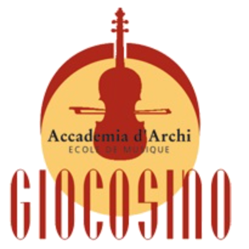
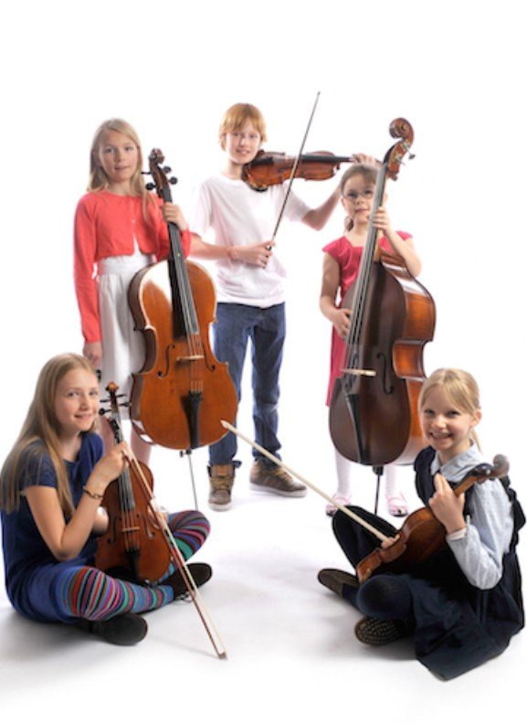
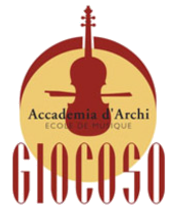
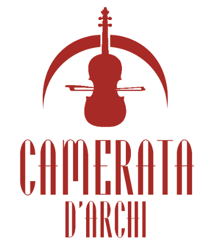
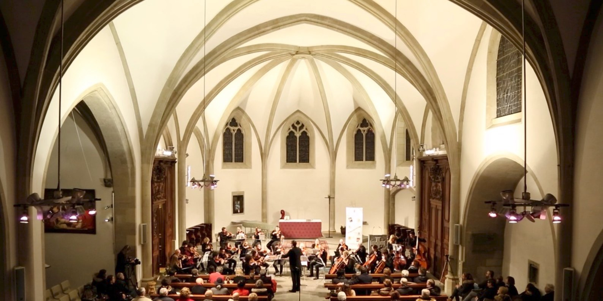

Giocosino
- Niveau
- Dès 1 an de violon
- Direction
- Guillaume Chambaud
Pour découvrir ensemble le plaisir de jouer en orchestre, dès la première année.
Rejoindre GiocosinoViolon, alto, violoncelle et contrebasse. Des cours d'instrument, la formation musicale et trois orchestres pour jouer ensemble, depuis 1998.
Dès CHF 1'455.– par année, orchestres compris. Une bourse est possible. Voir les écolages

Depuis sa fondation, l'Accademia d'Archi se consacre aux instruments à cordes frottées par un archet, complétés par la formation musicale.
Le plus aigu de la famille. Une année de violon suffit pour rejoindre l'orchestre Giocosino.
Un peu plus grand que le violon, au timbre plus grave, avec son propre plan d'études.
Joué assis. Il existe en petites tailles, on peut donc le commencer très jeune.
Le pilier grave de l'orchestre, que l'on peut commencer dès 6 ans.
La taille de l'élève ne joue aucun rôle : on trouve des instruments de toutes les grandeurs.
Pas de test d'entrée ni d'âge minimum. Un cours individuel par semaine, de 30 à 60 minutes selon le niveau, un cours de groupe chaque trimestre, et une ou deux leçons d'essai si l'enfant hésite encore entre deux instruments.
De la première initiation au cursus intensif, chaque élève avance à son rythme, entouré de 20 professeurs.
L'initiation musicale dès quatre ans, puis la formation musicale, appelée aussi solfège. En petits groupes, le mardi, avec Sandrine Girardon.
Depuis 2012, avec le DIP, nos professeurs enseignent les cordes à des classes primaires entières. Cette année : Bois-des-Arts, Adrien-Jeandin, Charmilles et Sécheron.
Deux cours d'instrument par semaine, solfège, musique de chambre et orchestre, pour préparer l'examen d'entrée au precollege de la HEM.
Des cours de maître avec des solistes invités, comme le contrebassiste Franco Petracchi ou l'altiste Mathis Rochat.
Apprendre un instrument à cordes n'a de sens que s'il permet de partager le plaisir de faire de la musique avec d'autres. Chaque élève trouve l'orchestre qui correspond à son niveau.

Pour découvrir ensemble le plaisir de jouer en orchestre, dès la première année.
Rejoindre Giocosino
Un vaste répertoire de toutes les époques, de la Fête de la Musique aux festivals internationaux.
Rejoindre Giocoso
Professeurs et élèves les plus avancés réunis pour interpréter les œuvres les plus exigeantes du répertoire.
Se renseignerOuverts à tous les jeunes instrumentistes à cordes. Giocoso et Giocosino accueillent aussi les musiciens qui ne suivent pas leurs cours à l'Accademia : ils y sont invités gracieusement. Pour les élèves de l'Accademia, l'orchestre est compris dans le forfait instrumental.

Les orchestres de l'Accademia se produisent régulièrement à Genève et bien au-delà.
À 19h30, au Centre paroissial protestant, rue de Genève 77, Chêne-Bourg.
12 auditions jusqu'en juin 2027
Les inscriptions sont ouvertes toute l'année. Il est admis que l'apprentissage d'un instrument doit débuter dès le plus jeune âge.
| Cours par semaine | Par année | ou 10 × |
|---|---|---|
| 30 minutes | CHF 1'455.– | 145.50 |
| 40 minutes | CHF 1'915.– | 191.50 |
| 50 minutes | CHF 2'370.– | 237.– |
| 60 minutes | CHF 2'855.– | 285.50 |
Jusqu'à 25 ans, domicile dans le canton de Genève. Formation musicale, musique de chambre et orchestres compris. 5 % de réduction par enfant dès deux enfants de la même famille.
Les familles au revenu modeste peuvent obtenir une bourse d'écolage, selon le règlement cantonal C 1 20 08. Demande de réduction sur ge.ch
Avec le soutien de la République et canton de Genève et de la commune de Chêne-Bougeries.
Membre de la CEGM, label ArtistiQua